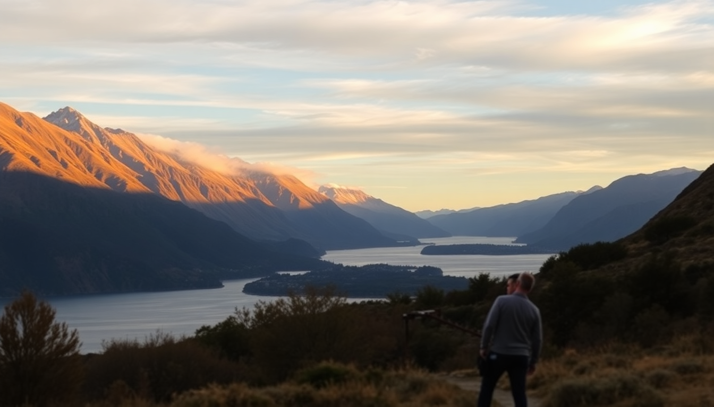

Best Day Trips from Queenstown: Milford Sound, Glenorchy & Wanaka

I spent a week based in Queenstown last February, and every day I had the same dilemma: stay and enjoy the lakefront, or push out into the surrounding landscapes that look like they were designed by a movie studio. I did all three classic day trips—Milford Sound, Glenorchy, and Wanaka—and here’s what actually worked, what didn’t, and where I’d skip the hype next time.
Is Milford Sound worth the long drive from Queenstown?
Honestly, I almost skipped it after reading about the five-hour round-trip from Queenstown. But I’m glad I didn’t. The drive itself—through the Homer Tunnel and past Mirror Lakes—is half the payoff. The fiord itself is massive and quiet in a way photos don’t capture. But you have to plan around the crowds.
- Book the earliest cruise you can. I took a 9:00 AM departure with RealNZ and had the fiord almost to myself for the first hour. By 11:00, the tour buses arrived.
- Pack layers and a rain jacket. Milford Sound gets 7 meters of rain a year. I got drenched on the outer deck near Stirling Falls, and it was fantastic—but only because I had a dry change of clothes in the car.
- Stop at the Chasm Walk on the way back. It’s a 20-minute loop through dense rainforest to a narrow gorge. Quick, easy, and way more dramatic than the name suggests.
- Fill up gas in Te Anau. The stretch between Te Anau and Milford Sound has no fuel stations. I saw a rental car stranded near the tunnel entrance—don’t be that person.
The cruise itself is a two-hour loop past seals, waterfalls, and sheer rock faces. If you’ve been to Norwegian fjords, it’s a similar vibe but greener. If not, it’s genuinely impressive. The one thing I’d skip: the underwater observatory add-on. It’s cool in concept, but the fish were sparse on my visit.
What’s the best way to get to Glenorchy from Queenstown?
The drive to Glenorchy is only 45 minutes, and it’s the most scenic 45 minutes I’ve ever spent behind a wheel. You hug the shore of Lake Wakatipu the whole way, with the Remarkables mountain range rising straight out of the water. I pulled over at least four times for photos.
- Walk the Glenorchy Lagoon Boardwalk. It’s a flat, 40-minute loop through wetlands with views of Mount Earnslaw. I saw a heron and two ducks having a territorial dispute—more entertaining than any tour guide.
- Eat at the Glenorchy Hotel. I had a lamb pie and a flat white there. Nothing fancy, but the fireplace was roaring on a cold afternoon, and the staff pointed me toward a hidden trail behind the property.
- Drive another 15 minutes to Paradise. Yes, that’s the actual name. The gravel road ends at a valley used in The Lord of the Rings filming. It’s a dead end, so you turn around and come back—but the silence there is unreal.
- Skip the horseback riding unless you’re an experienced rider. I watched a beginner get thrown near the Dart River. The guide handled it fine, but it’s not a gentle pony ride.
Glenorchy is a half-day trip, max. I left Queenstown at 9:00 AM, did the boardwalk, had lunch, drove to Paradise, and was back in Queenstown by 2:30 PM. That left the afternoon for a beer at Smiths Craft Beer House and a nap.
How do you spend a day in Wanaka from Queenstown?
Wanaka is an hour’s drive from Queenstown over the Crown Range Road—a winding stretch with hairpin turns and views that make you forget to breathe. I’d say it’s a better destination than Queenstown itself if you prefer quiet lakeside towns over tourist crowds.
- Walk to the Wanaka Tree at sunrise. It’s the famous lone willow in the lake. By 8:00 AM, there were already 20 people with tripods. By 9:00, it was a scrum. Go early.
- Hike Roy’s Peak if you have the legs. It’s a 6-hour round trip, steep from the first step, and the summit view of Lake Wanaka and the Southern Alps is the best photo I took in New Zealand. Start before 6:00 AM to avoid the midday sun.
- Eat lunch at Fedeli. It’s a small Italian place on Ardmore Street. I ordered the gnocchi with sage butter and a glass of Central Otago Pinot Noir. Simple, perfect, and the server recommended a local vineyard for the drive back.
- Visit the National Transport and Toy Museum if you have kids—or if you’re weirdly into vintage cars and Barbie dolls from 1975. I spent an hour there and still didn’t see everything.
One warning: the Crown Range Road can be icy in winter (June–August). I drove it in February, no issues, but a local told me rental cars get stuck there every winter. Check the NZTA road conditions before you go.
When is the best time of year for these day trips?
I went in February (summer), and it was ideal for all three. Long daylight hours (sunset after 9:00 PM), temperatures around 20–25°C, and no snow on the passes. But each season changes the experience.
- Summer (Dec–Feb): Best for driving and hiking. Roy’s Peak is clear, Milford Sound roads are dry, and Glenorchy’s boardwalk is lush. Book everything in advance—Queenstown hotels like The Rees Hotel fill up months ahead.
- Autumn (Mar–May): Fewer tourists, golden light on the Remarkables, and the larches turn yellow around Wanaka. The weather is more unpredictable—I had rain and sun in the same hour near Arrowtown.
- Winter (Jun–Aug): Milford Sound is moody and dramatic, with snow on the peaks. But the Homer Tunnel can close due to avalanches, and the drive to Wanaka over Crown Range requires chains. I’d skip Glenorchy in winter—the road is fine, but the lagoon walk is muddy.
- Spring (Sep–Nov): Snowmelt makes waterfalls in Milford Sound roar. The crowds are thin, but many hiking trails above 1,000 meters are still closed. Wanaka’s lavender farm is worth a stop if it’s open.
Which day trip should you skip if you’re short on time?
If you only have two days in Queenstown, skip Wanaka. I know that’s controversial, but here’s my reasoning: Milford Sound is a unique natural wonder you can’t see anywhere else in the world, and Glenorchy is a quick, low-effort trip with huge payoff. Wanaka is beautiful, but it’s essentially a quieter version of Queenstown with one famous tree and a hard hike.
- Day 1: Milford Sound (leave by 6:00 AM, back by 4:00 PM)
- Day 2: Glenorchy + Paradise (morning) and Queenstown Hill Time Walk (afternoon)
- Save Wanaka for a separate trip if you’re driving from Queenstown to the West Coast or Mount Cook. It’s a natural stop on that route.
If you have three days, do all three. But don’t try to cram Milford Sound and Wanaka into the same day—I met a couple who did that and they looked wrecked at dinner.
FAQ
Can you visit Milford Sound without a tour? Yes. I drove myself from Queenstown and booked a cruise directly with RealNZ at the dock. Driving gives you flexibility to stop at the Chasm and Mirror Lakes, plus you skip the cramped bus. The only downside is parking fills up by 10:00 AM, so aim to arrive before 8:30.
Is Glenorchy just for Lord of the Rings fans? Not at all. I’ve never seen the movies, and I still loved it. The landscape is stunning on its own—emerald rivers, snow-capped peaks, and that dead-quiet valley at Paradise. The film sites are just a bonus.
Do you need to book accommodation in Wanaka for a day trip? No. I drove back to Queenstown the same day without issue. But if you want to hike Roy’s Peak, consider staying overnight in Wanaka. The hike takes 5–6 hours, and you’ll be exhausted. I stayed at Edgewater Hotel once, and the lakefront rooms are worth the splurge if you have the time.
Conclusion
- Milford Sound is worth the long drive—take the earliest cruise, pack rain gear, and stop at the Chasm Walk.
- Glenorchy is the easiest day trip: 45 minutes each way, a flat boardwalk, and a dead-end road to Paradise.
- Wanaka is a better overnight destination than a day trip, but Roy’s Peak and Fedeli make it worthwhile if you have time.
- Summer (December–February) is the safest season for driving and hiking; winter requires snow chains and flexibility.
- Skip trying to do Milford Sound and Wanaka in one day—you’ll rush both and enjoy neither.